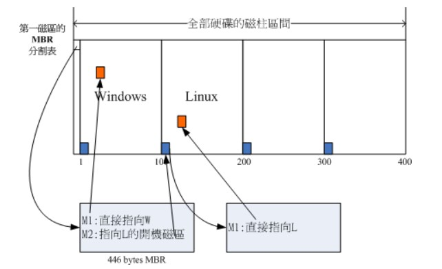

双系统的实现原理
硬件令机器变快。软件则把快机器搞慢。
前言
今天谈一谈双系统的实现原理，其实写这篇博客的时候我还没怎么彻底搞懂，不过在写的过程中会边思考边写，因为借鉴了CyC2018/Interview-Notebook，这个文档也是借鉴了一本书《鸟哥的Linux私房菜》。
双系统
你也许会发现身边有许多装逼大神，用电脑就用电脑了，还非得矫揉造作地弄一个双系统，Windows+Linux，旁人一看，立马感觉逼格顶呱呱。双系统很好理解，无非就是一个选择问题，内部过程一目了然，一个if语句嘛。打个不合适的比方，就比如上厕所，这厕所就好比是操作系统，有男厕所、女厕所，你进厕所前就是一个选择嘛。下面我们就看一下机器是如何选择的。
实现原理
在谈实现原理之前，我们必须要搞清楚几个概念，也许你可能听说过这些概念，但却不知道它是干嘛用的，那么你很适合读这篇文章。
在看这些概念的过程中，你可以结合这张图来看。虽然有些繁体字，就当
涨姿势了我滴乖。

BIOS
我靠，是你！BIOS，之前安装virtual box的时候还见过你，当时让我开启一下Intel VT-x，然后就需要让BIOS大哥帮忙。操作系统老师好像也讲过，好像。。。
那么这个BIOS到底是个什么鬼？Basic Input Output System。结合英文全称来说一下，基本输入输出系统。没错，BIOS 是开机的时候计算机执行的第一个程序，他会决定你开启电脑后的下一步工作。BIOS大哥知道你的磁盘里哪些可以开机，并且会读取第一个扇区的MBR，那什么又是MBR？
MBR
Master boot record, MBR，翻译过来是主要开机记录，这又是什么鬼？我也不太明确这个定义，不过我确切的知道它是用来干嘛的。MBR是可以执行自己内部的开机管理程序的。
开机管理程序
wtf？定义一个跟一个，什么鬼？客官您别着急，好戏马上开始。。。开机管理程序是干嘛的？开机管理程序会加载操作系统的核心文件。那就很清楚了吧，一个电脑里装上两个系统，只需要有两个开机管理程序就行了呗。
我们再来仔细看一下开机管理程序的其他功能。
选单、载入核心文件以及转交其它开机管理程序。
转交这个功能可以用来实现了多重引导，只需要将另一个操作系统的开机管理程序安装在其它分区的启动扇区上，在启动 MBR 中的开机管理程序时，就可以选择启动当前的操作系统或者转交给其它开机管理程序从而启动另一个操作系统。
总结
捋一捋思路。一切从开启电源开始。。。
电源开启，电脑启动
BIOS，BIOS读取第一个扇区的MBR，MBR看自己内部有没有开机管理程序（没有的话就废了，没装系统嘛），有的话，看看选单里面有啥东西，（如果安装了Linux和Windows），自身的开机管理程序是Windows的，并且可以转发到另一个开机管理程序。那么选单里就有两个选项，载入Windows和载入Linux，而载入Linux实际上是两个步骤，先转发到Linux开机管理程序的位置，然后由Linux的开机管理程序，载入Linux系统核心。
嗯，就这样了，照着图看更清晰哟。